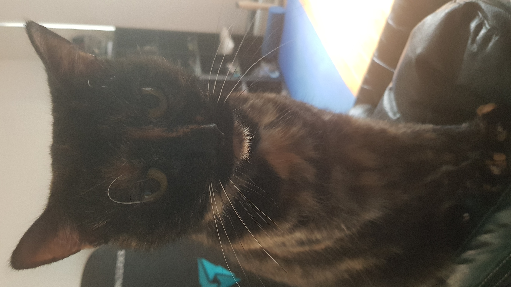

Name: Julian Bayley
Student ID: s3915785
Student email: s3915785@student.rmit.edu.au
I come from an English-speaking family of English & Australian ancestry. I have two siblings, a brother and sister (both older) and live with my partner in Moonee Ponds. We recently adopted a cat, named Molly.
I have completed VCE as well as a Certificate 3 in Customer Contact, done as part of a workplace training program during some prior employment.
In my spare time, I enjoy computer gaming and gardening. I also enjoy Dungeons & Dragons (3.5ed preferred) however unfortunately, these days- and especially during a pandemic, don’t get many opportunities to play.
My interest in IT stems from how it connects to, and impacts on, so many aspects of our lives. The internet has enormous functionality and potential, however also potential for misuse- for that reason cyber security seems like an increasingly necessary discipline in these times.
I think my interest was piqued when cybersecurity started to become a more household term, due to an increased occurrence of cyber crime against both public and private organisations and an increasing number of large-scale cyber security events, such as the SolarWinds hack and the compromising of Microsoft Exchange email servers etc.
My own IT experience has been relatively limited. Professionally, I have previously worked as a complaint resolution subject matter expert (SME) in telecommunications customer service; IT allowed me to interact with and assist colleagues via direct communication and engage in knowledge sharing and collaboration. I was also able to assist customers by doing things like performing remote service tests for network faults or checking the suitability of their service plans by analysing their usage history and patterns etc. Outside of work I use IT for communication, information and recreation.
I chose to study at RMIT due to having heard good things about the organisation from previous students and, also, simple convenience- it is the closest university to my home, which means less time travelling to and from campus.
I expect to learn a combination of practical skills and technical knowledge, regarding not only various fields of IT but also navigating challenges in the professional world. I may also gain some insight into my own strengths and weaknesses.
I believe my ideal job would, currently, be as a cyber security analyst. The role itself would likely include tasks such as;
Due to the seemingly pervasive need for IT security, and projected growth within the industry itself, the role would offer a good level of job security while also offering an opportunity to be involved with different work within an organisation. Analyst roles also seem to be reasonably well paid.
I tend to appreciate roles that offer variety, learning and a degree of challenge (as they are all things which help to prevent becoming bored). A need for staying up to date with industry subject matter and expertise- such as security testing techniques- and learning about associated roles within the industry may help to make an analyst more thorough. Such learning may also provide inspiration for potential further career development. All these things would likely help me remain focused and engaged in my role, which is another factor in my consideration.
The position would likely require tertiary qualifications (and possibly industry certifications), well developed communication skills and a strong knowledge of cyber security itself (and associated IT skills); knowledge of types of security threats (malware, spyware, hackers etc) and their prevention, mitigation and countermeasures, knowledge of industry related hardware, software, network configurations and infrastructure, relevant laws and risk, data and security management policies or frameworks. Depending on the role itself, prior industry experience may also be required.
Due to experience in complaints resolution as well as consultant support, I believe I currently possess strong communication skills. To be considered for a cyber security analyst role I would need to gain qualifications, IT and cyber security knowledge and skills- I may also need industry certifications and industry experience, depending on the role and employer.
Completing the Bachelor of IT with a focus on IT security would, hopefully, equip me with a strong foundation of the necessary knowledge and skills while also providing me with qualifications and allowing the opportunity to attain further industry certifications (probably starting with CompTIA Security+). Obtaining employment in the field, even in an entry level role, would then allow me to begin to gain experience that I may need to consider further certification (CISSP) and/or to be considered for a “senior” role (within the industry) or a greater role within the organisation.
http://www.emtrain.eu/learning-styles/
“Reflectors prefer to stand back and observe. They tend to be cautious, preferring to take a back seat. They like to collect and analyse information to help them reach their conclusions, which they may take considerable time and effort to develop. Reflectors see the big picture by using information gathered from previous experience as well as the here and now.”(LifeTrain, Learning styles quiz)
https://eml.usc.edu/leadership-style-quiz
“You know how to be genuine and present during interpersonal interactions. You have the emotional intelligence to feel empathy and you know how to express it. Your authenticity means you are generous and share yourself with others. Storytelling is one of your strengths; it is how you connect with people and engage them in a shared vision. Perhaps your biggest gift is the ability to empower the people around you to achieve their best.”(USC Price School of Public Policy, 2021)
More recently, I have found I am less confident and a bit more uncertain of the future. These results (especially the Myers-Brigs) offer confirmation of change in my personality (reflected in current and previous results). I have begun to place greater value on communicating and connecting with my family and friends. I suspect these changes have stemmed from some previous impacts to my health and changes in my occupation while also being influenced by wider events such as COVID-19.
When I completed my personality test previously, I was working as a SME and was confident in my working knowledge. Now, as a student and a member of a team, I believe I will be more open to outside ideas and team discussion (compared to previously) however may be hindered in such discussions by reduced self-confidence. This may also result in being less argumentative and/or perhaps taking on a more mediatory role, in the event of team disagreements.
When forming a team, ostensibly I would need to be mindful of my own communication style to ensure success in communication and contribution. Ideally, I should form a team with similar people that complement my personality and learning types (those more open to group discussion) however if that does not occur, to be mindful of how I need to communicate and the potential communication barriers I may experience if teamed with people with more assertive personality or leadership types.
A mobile application designed to complement a user’s experience of visiting a site of historical or natural significance by displaying a graphical representation related to the nature of the site itself (and often based on the user’s physical location). When looking around the site via the mobile app, the user would be able to view a graphical interpretation of the site’s history; be it buildings, historical figures or battles etc. Users could then get further information or interact with the content by tapping on the items displayed.
History can be interesting however often many historical sites may be in a dilapidated state (some may be literally ruins) or just completely bare or empty (such as battlefields), meaning a visitor must rely on imagination and additional reference materials to fill in the gaps. uring a recent trip to Port Arthur, I was a bit disappointed by how little of the site actually remained- the tour offered further information which could be accessed via mobile so I got to thinking how it would be much more immersive to even just be able see what the buildings looked like, their distance and placement to each other in the town etc, in order to get a better feel for life in the work colony at the time.
“History Augmented” would operate as a mobile based application using a variety of data to display content related to the site the visitor was attending. By loading the application and downloading the site content pack, the user would be able to view the site and see various content related to its history. They would be able to choose the types of content to be viewed, how it would be arranged and how it could be accessed. Content could range from simple photos and sprites to 3D images anchored to specific GPS coordinates, along with text and sound. By tapping the images, the user would be able to access additional information and notes of the site’s significance or initiate a display of various content related to the item tapped. Users would also be able to take photos and videos of the area viewed, inclusive of the augmented reality content, to create interesting comparisons of “before and after” or even just creative and fun shots to remember the visit with.
The content itself would be able to be accessed in a few different methods; a traditional and straightforward menu, haphazardly in a “free mode” where content appears based on the user’s progress through and around the site and/or location and proximity to features (if the content was location based) or they could initiate a “tour” which would prompt them on where to walk and where to face (again, using location- based services and data) and displaying content at pre-programmed areas or intervals.
The types of content, as mentioned, would depend on the type of site being visited however, ideally, would include 3D images. Ruins of cultural sites or towns could be digitally reconstructed and displayed, allowing the user to walk through or around the structures, granting a much better perspective for comparison and visualisation of the size and scope of their construction and the materials used. Battlegrounds could display images and information about the combatants, such as battlefield placement, formations, types of units, equipment and weapons used etc. The battles themselves could even be brought to life and played out in mock fashion, showing significant moments of the battle, depictions of key personnel such as generals, officers or soldiers of renown etc. However, content would not be limited to man-made features or places of significance- it could also be included for natural sites such as national parks, significant natural sites such major forests, rivers and volcanoes or sites linked to discoveries (such as fossils etc), allowing visualisations of examples of specific flora and fauna native to the areas or even flora and fauna now extinct, such as dinosaurs. It could also be used to display simulations of natural disasters such as fires, floods or volcanic eruptions in areas of their significant occurrence (be it either man-made or natural sites).
Ostensibly, the biggest limitation on the content would be the means of creation itself as well as the hardware and system requirements to display and access content when ensuring compatibility to a range of user devices.
The app would require a smartphone with general features such as a camera, touch screen, high bandwidth internet connection and sufficient storage for the content pack. Ideally it could have both an Android and IOS version (however this would likely result in higher production complexity and costs). Depending on the content pack, the app itself may need to draw on local location data but the augmented reality content (the visual and audio data) would be included in the packs (downloaded separately to the app). The content packs would require audio, graphics and location data to be created (perhaps via a platform like Amazon Sumerian1(Aran Davies, DevTeam.Space) or Vuforia2(Program-Ace, 2021)) or sourced separately.
The main app would then need to load and integrate the associated data, however this aspect may be assisted by or performed with existing platforms such as, Google Play for AR (ARCore)3 (Google, 2021) or ARKit4(Apple, 2021).
A useable end-product would require programming of the main app, as well as content packs. Audio and visual data would need to be captured or created, indicating a need for multimedia skills and location data would need to be sourced or captured for relevant sites. All of the data would then need to be compatible with the main application. Furthermore, information regarding the history of the site would also need to be sourced, likely from relevant historical, scholastic or tourism groups (perhaps in conjunction with any parties interested in using the finished product). Close and regular communication between parties interested parties and those involved in production would need to be maintained throughout each project, so communication and project management skills would likely be quite beneficial. The product would also require advertising or marketing and distribution via platforms like Google Play or IOS App Store.
Each of the above aspects and requirements already occurs within IT and augmented reality industries however, more than likely, each aspect would need to be completed independently which would most likely increase production costs and complexity and mean production needs to be more closely managed and completed with close adherence to design criteria.
Success of the project would require the completed technical production as well as the uptake of the finished product by interested parties- should both of these be achieved, the project should help to create better and more interesting experiences when visiting historical sites (or any site for that matter) where AR content packs are available. It may help to improve the overall experiences that people have and in turn have flow on benefits such as in increase in tourism and attendance to sites where the AR content is available.